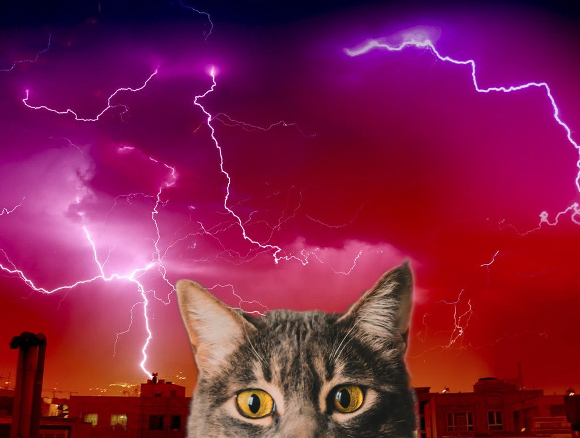

Apocalypse Meow
Written July 20th 2020, 8:42:11 pm EDT by Dr. Meow

A Powerful Summer Storm approached with mighty thunder and powerful showers,
and as always my power went out for for some twenty four hours.
I love Mother Nature and her Cosmic Powers,
with this much rain there can only be more blooming flowers.
But, yah, as soon as the power went out,
my apartment went completely dark.
My air conditioning was gone too;
I tried to turn on the window fan before I realized "I need to think that one through."
All my extravagantly blinking computers and phones,
either shutdown or chirped their sad little low-battery tones.
I watched the sun go down with a sigh,
and so the only thing left blinking was the smoke detectors and I.